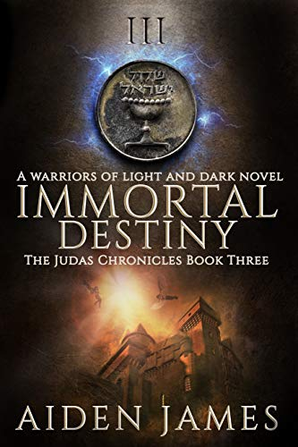
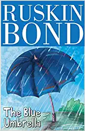

** HARRY POTTER **
The unforgettable, heartbreaking story of the unlikely friendship between a wealthy boy and the son of his father’s servant, The Kite Runner is a beautifully crafted novel set in a country that is in the process of being destroyed. It is about the power of reading, the price of betrayal, and the possibility of redemption; and an exploration of the power of fathers over sons—their love, their sacrifices, their lies.
A sweeping story of family, love, and friendship told against the devastating backdrop of the history of Afghanistan over the last thirty years, The Kite Runner is an unusual and powerful novel that has become a beloved, one-of-a-kind classic.
--khaledhosseini.com
Buy & Read...

** THE KITE RUNNER **
The unforgettable, heartbreaking story of the unlikely friendship between a wealthy boy and the son of his father’s servant, The Kite Runner is a beautifully crafted novel set in a country that is in the process of being destroyed. It is about the power of reading, the price of betrayal, and the possibility of redemption; and an exploration of the power of fathers over sons—their love, their sacrifices, their lies.
A sweeping story of family, love, and friendship told against the devastating backdrop of the history of Afghanistan over the last thirty years, The Kite Runner is an unusual and powerful novel that has become a beloved, one-of-a-kind classic.
--khaledhosseini.com
Buy & Read...

** A CUTE LOVE STORY **
Aakriti loves Neeraj who is smart, sensible and a passionate lover, Neeraj loves Aakriti who is simple, innocent but very naughty. They together made “A CUTE LOVE STORY “which is completed 42,926 words romantic story of MBA college students set in lucknow.
Fun, romance and sensual, the book revolves around the girl Aakriti and also Neeraj who learn the ultimate meaning of honesty, passion, and devotion and changed himself to be a true lover of the girl.
Aakriti who after a lot of hard work and struggle ,manages to get into the MBA college founds herself to be attracted towards one of the senior who also started liking her a lot .Neeraj who himself was attracted towards Aakriti and likes her for her simplicity but remains reserved and never approached her.
Buy & Read...

** IMMOERTAL DESTINY **
Known as the “Singing Coin” among the ancients, this shekel was originally lost long ago…on the very night of Jesus Christ’s arrest in Jerusalem. Hoping to save it for last, until after the other twenty-nine coins are recovered, Viktor Kaslow’s recent designs for the coin thwart William’s plan.
A new murder spree has begun for the ruthless Kaslow, who races against William and the immortal Roderick Cooley to obtain the coin from a reclusive Essene sect residing in the Bolivian Andes. But unlike William and Kaslow’s previous confrontations, this one involves many more outside interests, since this coin contains unusual properties. If it falls into the wrong hands, the entire world will be brought to its trembling knees....
Buy & Read...

** BLUE UMBRELLA **
As soon as Binya sees the beautiful blue silk umbrella, she wants it. She wants the blue umbrella so badly that she is willing to exchange it for her lucky leopard's claw pendant. No one in the village has such a fine umbrella; wherever Binya goes, the umbrella goes with her. There are many who envy Binya for her treasured possession, but the most envious of them is old Ram Bharosa, the shopkeeper who has decided that he must own the beautiful, blue umbrella. This short and humorous novella captures life in a hill village of Garhwal, where ordinary characters become heroic and find opportunities to redeem themselves.
Buy & Read...